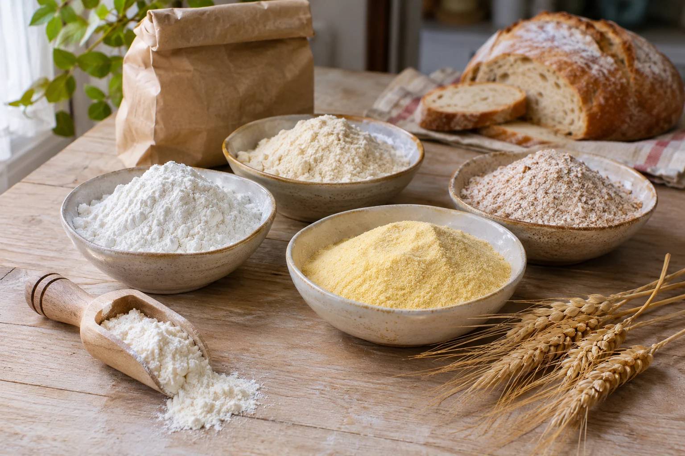
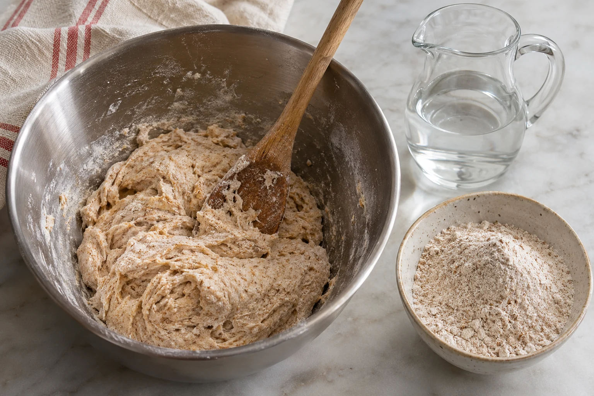

Cucina quotidiana
Farine: quale scegliere per pane, pizza e dolci
Tipo, forza, etichette e conservazione: una guida pratica per la cucina di tutti i giorni.
Fonti consultate il 21 novembre 2026

1. Tipo 00, 0, 1, 2 e integrale: cosa cambia
Queste denominazioni riguardano le farine di grano tenero. Non classificano tutte le farine ottenute da riso, mais o legumi. Il tipo descrive caratteristiche compositive legate alla lavorazione del chicco; non è una graduatoria della qualità. [1] [2]
| Tipo | Come orientarsi |
|---|---|
| 00 | È il tipo più raffinato, con una bassa presenza delle parti esterne del chicco. |
| 0 | Ha un limite di contenuto minerale leggermente superiore alla 00. |
| 1 | Ammette una maggiore presenza delle frazioni esterne rispetto a 0 e 00. |
| 2 | È un tipo meno raffinato; viene spesso chiamato anche semintegrale. |
| Integrale | Comprende anche le componenti esterne del chicco e il germe; confronta comunque la composizione dichiarata. |
Le ceneri sono il residuo minerale misurato in laboratorio, non cenere aggiunta. La tabella dell’articolo 1 del D.P.R. 187/2001 fissa, sulla sostanza secca: 00 massimo 0,55%; 0 massimo 0,65%; 1 massimo 0,80%; 2 massimo 0,95%; integrale fra 1,30% e 1,70%. Questi limiti non si applicano alle farine destinate a usi diversi dalla panificazione (articolo 1, comma 4). [1]
2. La forza W: come si comporta l’impasto
La lettera W indica un parametro ottenuto con l’alveografo: misura il lavoro necessario per gonfiare una piccola porzione di impasto fino alla rottura. In cucina aiuta a orientarsi sul comportamento della farina. Non misura la salubrità, la digeribilità o la qualità complessiva. [3]
Due farine con lo stesso W possono comportarsi diversamente. Contano anche la tenacità, cioè la resistenza alla deformazione, e l’estensibilità, cioè quanto l’impasto si lascia allungare. Nelle schede tecniche sono descritte dai parametri P e L; può essere indicato anche il rapporto P/L. [3] [4] [5]
| Preparazione | Cosa cercare |
|---|---|
| Biscotti e pasta frolla | Una farina indicata per frolla o biscotti, con comportamento poco tenace. Non occorre scegliere il W più alto. |
| Pane, pizza e focaccia | Una farina destinata a quella preparazione e compatibile con la ricetta e la gestione della fermentazione. |
| Impasti ricchi e lavorazioni impegnative | Una farina specifica, con scheda tecnica e ricetta coerenti: un solo numero non basta. |
Fonti: [4]
Le proteine dichiarate sulla confezione sono un dato utile, ma non permettono di ricavare un W preciso. Il parametro riguarda un impasto e la sua struttura: non è una conversione automatica dei grammi di proteine. [3] [4]
3. Semola e altre farine: il nome conta
| Nome | Da ricordare |
|---|---|
| Semola di grano duro | Si ottiene dal grano duro e contiene glutine. La semola rimacinata è impiegata anche in panificazione. |
| Farina di farro | Il farro è un frumento: non è un’alternativa senza glutine. |
| Farine di orzo e segale | Contengono glutine e non sono adatte alla dieta della persona celiaca. |
| Farine di riso, mais e grano saraceno | Le materie prime sono naturalmente prive di glutine, ma per la celiachia va controllata l’idoneità del prodotto lavorato e il rischio di contaminazione. |
| Farina di avena | Per la persona celiaca occorrono prodotti garantiti senza glutine e le indicazioni del medico. |
La somiglianza dei nomi può trarre in inganno: il grano saraceno non è frumento. Al contrario, il farro non diventa senza glutine perché è presentato come cereale antico. [7] [9]
Cambiare gradualmente una ricetta conosciuta
Passare alla farina integrale può cambiare assorbimento, consistenza e sviluppo dell’impasto. Conviene procedere per piccole sostituzioni e annotare il risultato, invece di cambiare tutto insieme. È un’indicazione pratica, non una promessa di resa identica. [14]
Esempio di miscela a peso: 375 g della farina già usata più 125 g di integrale danno 500 g totali, con il 25% di integrale. Il calcolo è corretto; la riuscita della ricetta con quella miscela va provata. Non è la conversione universale di una ricetta.
4. Leggere l’etichetta e fare i conti utili
Controlla la denominazione e gli ingredienti, soprattutto nelle miscele. Verifica gli allergeni e le indicazioni di conservazione. Quando è presente la tabella nutrizionale, confronta gli stessi valori per 100 g di prodotto. [6]
La voce «di cui zuccheri» è una parte dei carboidrati, non un valore da sommare a essi. Una farina può avere pochi zuccheri e molti carboidrati sotto forma di amido. Nelle etichette UE le fibre sono riportate separatamente: non sottrarle di nuovo dalla voce carboidrati. [6]
Farina e pane cotto non pesano allo stesso modo
La ricetta include acqua e altri ingredienti; durante la cottura perde acqua. Perciò 100 g di farina non equivalgono a 100 g di pane. Per una stima della porzione servono i carboidrati di tutti gli ingredienti e il peso finale dell’alimento.
Secondo esempio: 500 g di farina con 70 g di carboidrati per 100 g apportano 350 g di carboidrati. Se gli altri ingredienti non ne apportassero e il pane cotto pesasse 750 g, una fetta da 50 g avrebbe una stima di 350 × 50 ÷ 750 = 23,3 g.
Questo è un calcolo indicativo: etichette, fermentazione, perdite di lavorazione e porzioni introducono incertezza. Non è un’analisi nutrizionale del pane né una base sufficiente per stabilire da soli dosi di insulina. [8]
5. Quanta acqua? Capire l’idratazione
Nella panificazione l’idratazione esprime il rapporto tra il peso dell’acqua e il peso della farina. È una percentuale utile per leggere una ricetta, non una quantità ideale valida per tutti gli impasti.
Se usi lievito madre o un preimpasto, per il rapporto complessivo devi includere anche la farina e l’acqua già contenute al loro interno. In ricette con latte, uova o altri ingredienti ricchi d’acqua il confronto è meno immediato.

La farina integrale può richiedere una diversa gestione dei liquidi. Segui prima la ricetta e la scheda del prodotto; se modifichi l’acqua, annota la quantità realmente aggiunta. Evita di applicare una percentuale fissa a qualunque marca o miscela. [14]
6. Diabete e celiachia: scelte distinte
Se hai il diabete
Anche le farine integrali contengono carboidrati. Le fibre possono essere utili nell’alimentazione, ma il nome della farina non garantisce una determinata risposta glicemica. Contano la porzione, il prodotto finito, il pasto e la situazione personale. [7] [8]
Per i conti usa la voce carboidrati della confezione e la quantità consumata. Il piano alimentare e gli eventuali adeguamenti della terapia vanno concordati con il diabetologo o il professionista che ti segue. [8]
L’integrale non è automaticamente molto meno calorico del raffinato. Le linee guida del CREA favoriscono il consumo di cereali integrali nell’ambito di un’alimentazione varia: non descrivono una farina capace di curare il diabete. [7]
Se hai la celiachia
Grano tenero, grano duro, farro, orzo e segale sono da escludere. Una farina di riso o mais non è automaticamente idonea solo perché il cereale di origine è senza glutine: per il prodotto lavorato controlla le garanzie in etichetta e previeni la contaminazione in cucina. [9] [10]
Nell’Unione europea la dicitura «senza glutine» è ammessa se il contenuto nel prodotto venduto al consumatore non supera 20 mg/kg. Non indica l’assenza di carboidrati. [10]
Per l’avena scegli prodotti garantiti senza glutine e concorda l’introduzione con il medico: una piccola parte delle persone celiache può presentare sensibilità individuale anche all’avena. [11]
7. Conservare bene e usare in sicurezza
Segui le istruzioni della confezione. Tieni la farina lontana da calore e umidità, in un contenitore pulito, asciutto, ben chiuso e adatto agli alimenti. Conserva il riferimento a lotto e termine minimo di conservazione. Acquista quantità che prevedi di usare. [12]
L’integrale è più delicata perché contiene anche componenti del germe soggette a irrancidimento. Non attribuirle una durata universale: prodotto, temperatura, confezione e apertura influiscono sulla conservazione. Se le indicazioni prevedono l’uso del freddo, proteggi bene il prodotto da umidità e odori. [2] [12]
La farina è normalmente un alimento crudo. La macinazione non garantisce l’eliminazione dei microrganismi. Non assaggiare farina o impasti crudi; lava mani, utensili e superfici dopo la lavorazione e separali dagli alimenti pronti da mangiare. [13]
Cuoci secondo la ricetta e le indicazioni del produttore. Scaldare brevemente la farina in casa non è un metodo affidabile per renderla sicura da mangiare cruda. [13]
Tre domande frequenti
Una farina scura è sempre integrale? Il colore da solo non basta: leggi denominazione e ingredienti. [7]
La farina più forte è sempre la migliore? Serve quella adatta alla lavorazione. Una resistenza eccessiva può essere un limite. [3] [5]
Senza glutine significa pochi carboidrati? No: la dicitura riguarda il glutine; i carboidrati si leggono nella tabella nutrizionale. [6] [10]
Fonti consultate
Le fonti istituzionali sono affiancate da documentazione tecnica dei produttori e da un esempio di cucina sperimentale. La citazione non implica una collaborazione o un’approvazione di Per Me da parte degli enti.
D.P.R. 9 febbraio 2001, n. 187, articoli 1 e 2
Definizioni italiane degli sfarinati e classificazione del grano tenero. Pubblicazione ufficiale; riscontro della tabella dell’articolo 1 anche su Normattiva.
https://www.gazzettaufficiale.it/eli/id/2001/05/22/001G0242/sg
CREA, Sfarinati e prodotti da forno: il buono che non ti aspetti
Differenze fra sfarinati, composizione e profilo nutrizionale. Articolo del 28 settembre 2025.
https://creafuturo.crea.gov.it/15290/
KPM Analytics / CHOPIN, What is Baking Strength
Significato del parametro W e limiti del suo uso isolato. Fonte del produttore dello strumento, in inglese.
https://www.kpmanalytics.com/blog/what-is-baking-strength
IREKS, Compendium of Baking Technology: Alveograph
Tenacità, estensibilità e comportamento dell’impasto. Fonte tecnica del settore, in inglese.
https://www.ireks-kompendium.com/en/flour-analysis/analysis-methods-for-testing-the-protein-quality/alveograph
Lesaffre Italia, Estensibilità e macchinabilità
Equilibrio delle proprietà dell’impasto e spiegazione dei parametri di laboratorio.
https://lesaffre.it/lesaffre-cat/estensibilita-e-macchinabilita/
Articoli 21, 30 e 32; allegati I e XV: allergeni, dichiarazione nutrizionale, carboidrati, zuccheri e fibre.
https://eur-lex.europa.eu/eli/reg/2011/1169/oj?locale=it
CREA, Linee guida per una sana alimentazione, revisione 2018
Capitolo sui cereali, in particolare pagine a stampa 52-55: integrali, fibre, porzioni e limiti delle semplificazioni nutrizionali.
https://www.crea.gov.it/documents/59764/0/LINEE-GUIDA%2BDEFINITIVO.pdf/
Carboidrati e gestione del diabete. Fonte sanitaria statunitense: l’esempio della guida usa invece le voci delle etichette UE.
https://www.cdc.gov/diabetes/healthy-eating/carb-counting-manage-blood-sugar.html
Frumento, farro, orzo e segale in caso di celiachia.
https://www.celiachia.it/dieta-senza-glutine/gestire-dieta-senza-glutine/i-cereali-vietati/
Regolamento di esecuzione (UE) n. 828/2014
Allegato: condizioni per la dicitura «senza glutine» e prescrizioni per l’avena.
https://eur-lex.europa.eu/legal-content/IT/TXT/?uri=CELEX%3A32014R0828
AIC, Sono celiaco: posso consumare avena?
Indicazioni aggiornate il 28 luglio 2026: avena garantita senza glutine e introduzione con il medico.
https://www.celiachia.it/faq/sono-celiaco-posso-consumare-avena/
Utah State University Extension, Gearing Up for Holiday Baking
Conservazione della farina, protezione da calore e umidità, maggiore deperibilità dell’integrale. In inglese.
https://extension.usu.edu/news_sections/home_family_and_food/gearing-up-for-holiday-baking
FDA, Handling Flour Safely: What You Need to Know
La farina è un alimento crudo: cottura e igiene di mani, superfici e utensili. In inglese.
https://www.fda.gov/food/buy-store-serve-safe-food/handling-flour-safely-what-you-need-know
King Arthur Baking, How to substitute whole wheat for white flour in baking
Esperienza della cucina sperimentale del produttore: sostituzione graduale e diversa richiesta di acqua. In inglese.
https://www.kingarthurbaking.com/blog/2020/06/22/how-to-substitute-whole-wheat-for-white-flour-in-baking